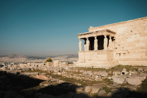

Confira o que está bombando!

O desafio de reduzir as desigualdades entre as regiões do Brasil.

Semelhanças e difereças: trabalho do historiador e do detetve.

Maneiras de combater a histórica segregação urbana no Brasil.